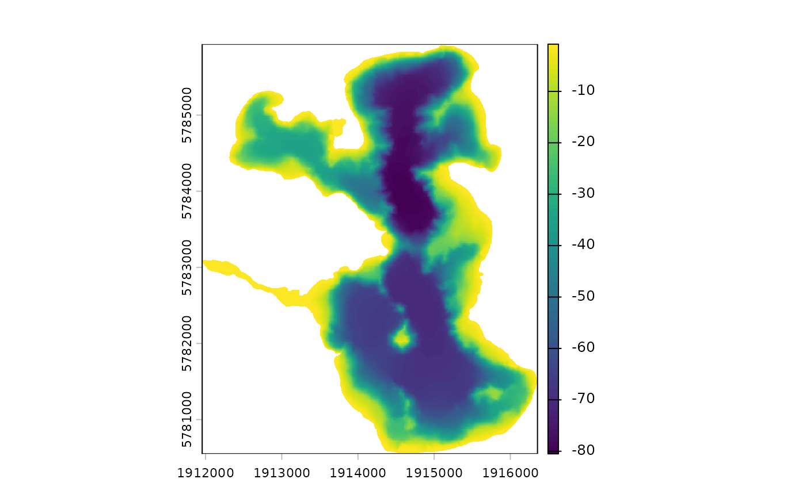

Generate depth points for interpolation
rasterise_bathy.RdGenerate depth points for interpolation
Usage
rasterise_bathy(
shoreline,
islands = NULL,
point_data = NULL,
contours = NULL,
res = 2,
subsample = TRUE,
crs,
method = "MBA",
print_plot = TRUE,
n = 1,
m = 1,
h = 8
)Arguments
- shoreline
sf object of lake shoreline.
- islands
sf object of lake islands if present.
- point_data
sf object of depth points or a dataframe of points with columns 'lon' and 'lat'. Must contain a "depth" column. If NULL, then contours must be provided. If NULL, then contours must be provided.
- contours
sf object of depth contours. If NULL, then points must be provided.
- res
numeric resolution of output raster in metres.
- subsample
logical subsample points to 10000 if TRUE. Default is TRUE.
- crs
target coordinate reference system: object of class
crs, or input string for st_crs- method
character interpolation method. Options are 'MBA' (default),
- print_plot
logical print plot of interpolated raster.
- n
initial size of the spline space in the hierarchical construction along the x axis. If the rectangular domain is a square, n = m = 1 is recommended. If the x axis is k times the length of the y axis, n = 1, m = k is recommended. The default is n = 1.
- m
initial size of the spline space in the hierarchical construction along the y axis. If the y axis is k times the length of the x axis, m = 1, n = k is recommended. The default is m = 1.
- h
Number of levels in the hierarchical construction. If, e.g., n = m = 1 and h = 8, the resulting spline surface has a coefficient grid of size \(2^h\) + 3 = 259 in each direction of the spline surface. See references for additional information.
Examples
shoreline <- readRDS(system.file("extdata/rotoma_shoreline.rds",
package = "bathytools"))
point_data <- readRDS(system.file("extdata/depth_points.rds",
package = "bathytools"))
bathy <- rasterise_bathy(shoreline = shoreline, point_data = point_data,
crs = 2193)
#> Generating depth points... [2024-11-03 21:46:24]
#> Finished! [2024-11-03 21:46:24]
#> Interpolating to raster... [2024-11-03 21:46:24]
#> Adjusting depths >= 0 to -0.82 m
#> Finished! [2024-11-03 21:46:41]
